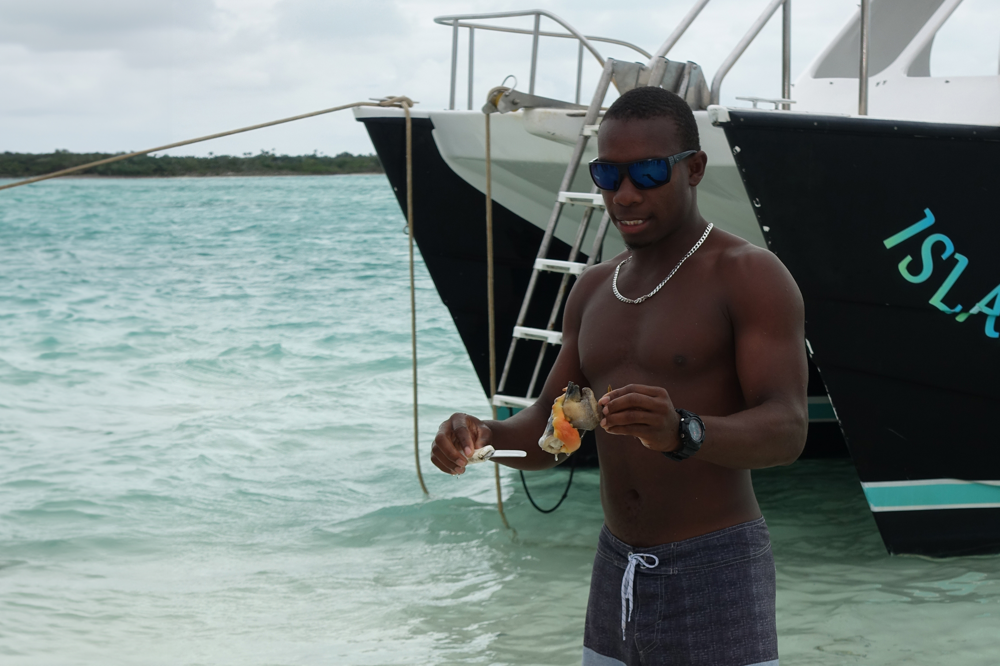
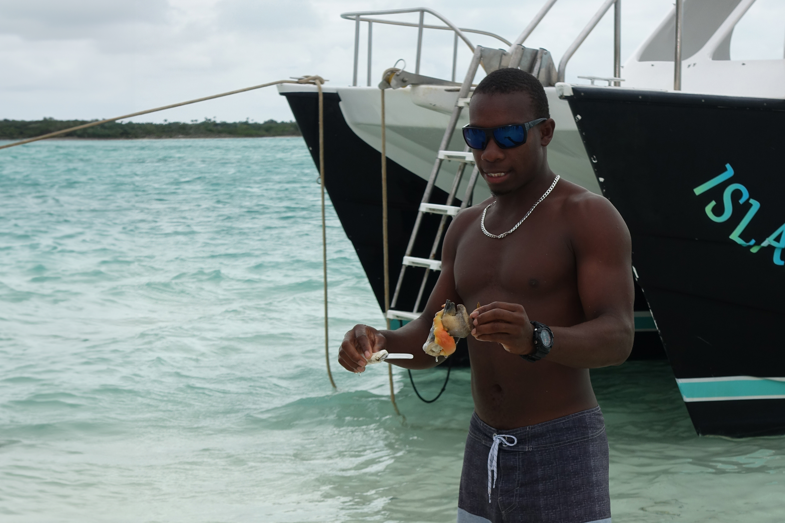
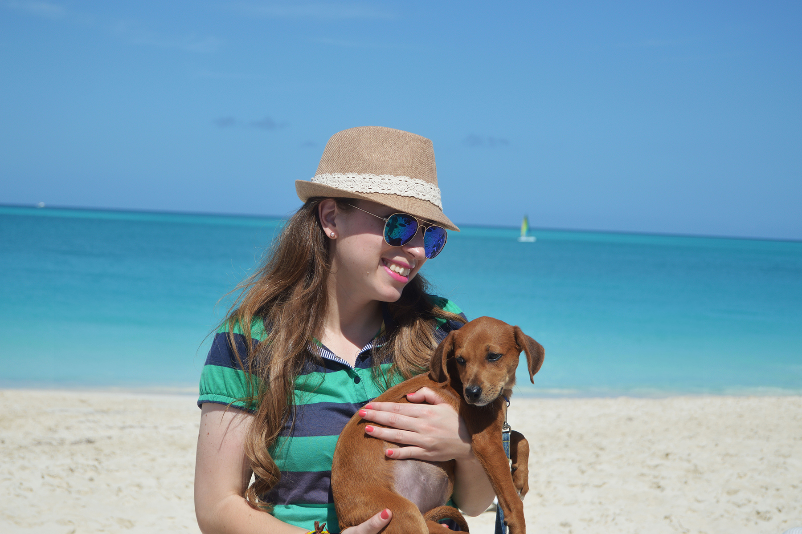
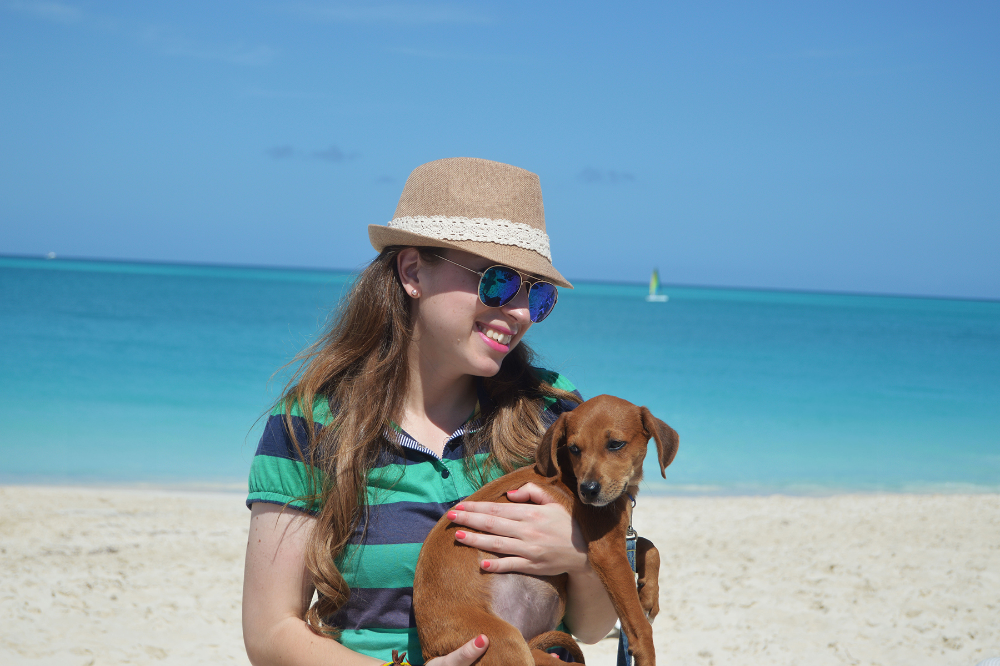

Exploring Turks and Caicos
Turks and Caicos Islands, where the sun always shines, the beaches are pure bliss, and the food is a treat for your taste buds. The beaches are like something out of a dream! The sand is soft and white, and the water is a mesmerizing shade of turquoise. Perfect for a relaxing stroll or just soaking up the sun. I couldn't resist taking out my camera to capture the scenic beauty – palm trees swaying, gentle waves kissing the shore, and the endless stretch of pristine coastline. As the sun sets over the horizon, casting a warm glow on the sandy beaches, I couldn't help but appreciate the simple joys of life – good food, beautiful scenery, and the company of friendly locals. Turks and Caicos Islands are a photographer's paradise, offering not just stunning visuals but also a taste of the laid-back island life.
Potcake Place ****
One of my favorite experiences on the island was with Potcake Place K9 Rescue. They offer a unique opportunity to adopt a puppy for the day and take them to the beach. This not only provides each puppy with crucial socialization time but also allows them to encounter new sights, smells, and meet numerous people. The puppies are at various stages of development, and spending time with them during your visit can contribute to their growth and well-being. During our stay, we took Poppy out, and it was a delightful experience. Additionally, Potcake Place K9 Rescue provides an option to adopt the dogs, and they assist with the entire process of bringing them to your home. For more information, you can check them out at: www.potcakeplace.com


 

 

Island Fish Fry ****
The Fish Fry in Providenciales, Turks and Caicos, is a well-loved event set in a friendly open-air location, making it perfect for families, couples, or solo travelers looking to enjoy local food and drinks. This event is popular for its unique blend of local flavors, talents, and products, offering a chance to dive into the culture of Turks and Caicos. During our visit, we had the pleasure of meeting locals who are regular attendees of the Fish Fry, adding a genuine touch to our experience. The event features cultural performers showcasing island dances, like the Rake and Scrape, inspired by the old sea salt industry. Another highlight is the Junkanoo rush by the local We Funk Band, a traditional Bahamian and Caribbean parade with vibrant dancers and musicians in colorful costumes, moving to the beat of drums, cowbells, and other local instruments. It's a delightful way to immerse yourself in the lively culture of the Turks and Caicos islands.